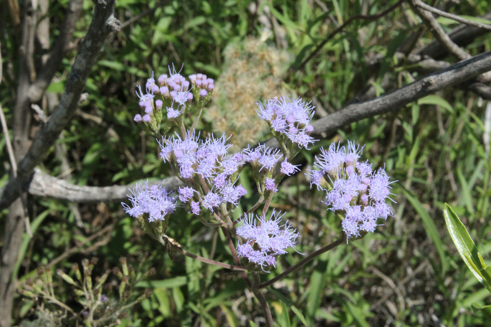
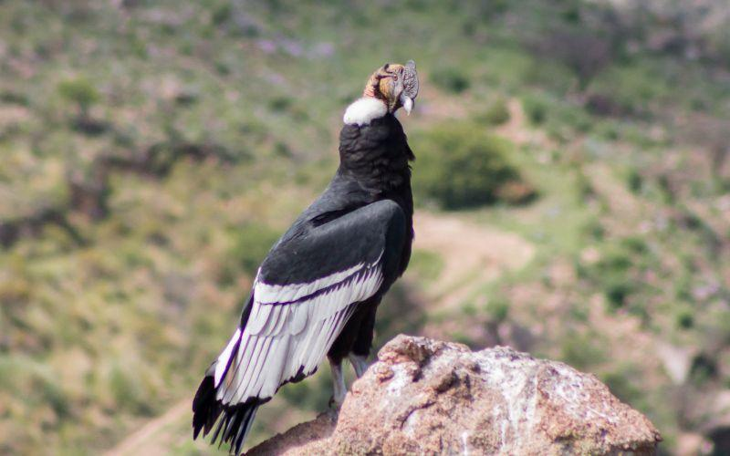
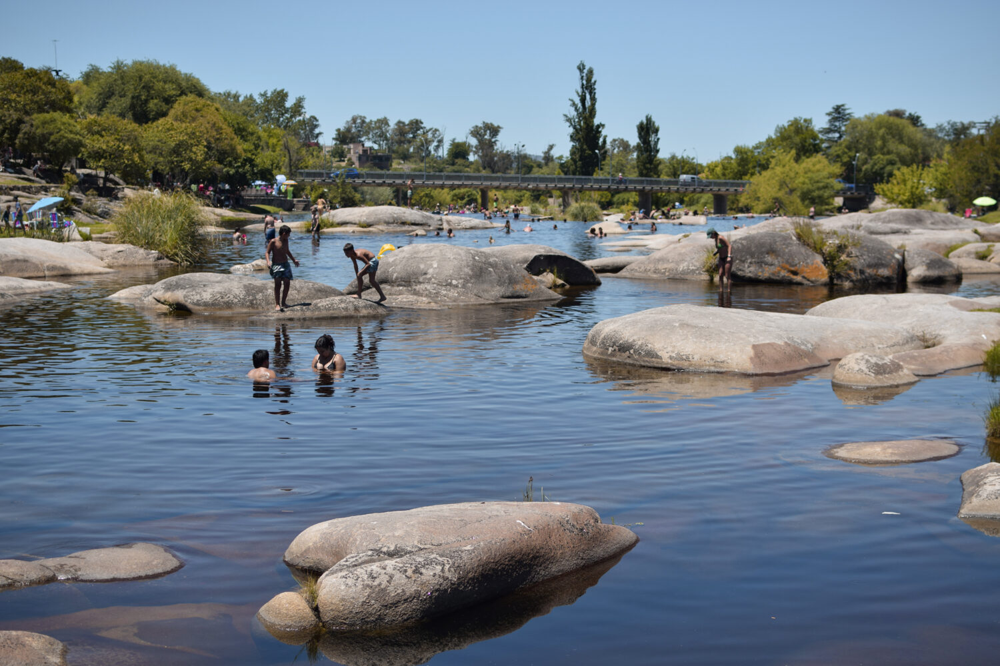
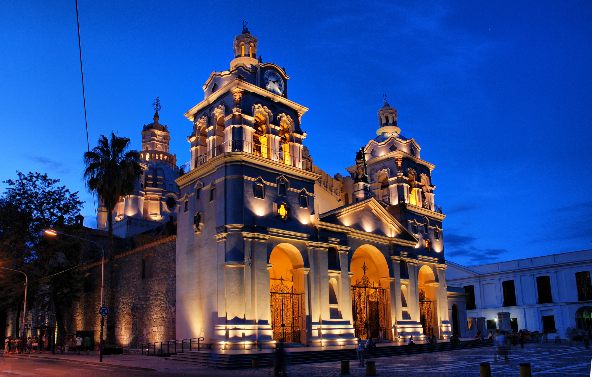
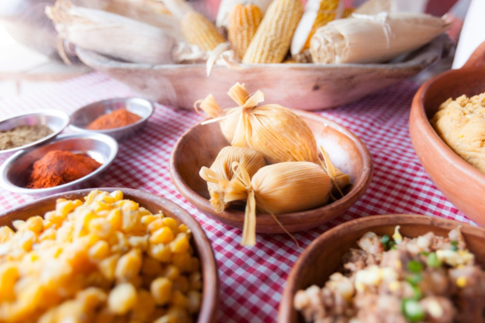
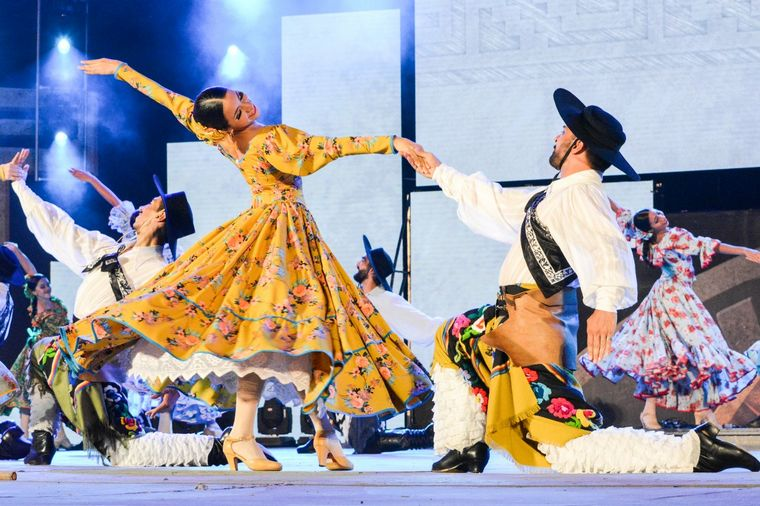

Inicio
Flora
La flora de Córdoba, Argentina, es diversa y resistente. Los imponentes quebrachos blancos y colorados dominan los bosques, mientras que el chañar y el algarrobo salpican las llanuras con su verdor espinoso. La humilde jarilla y las coloridas margaritas completan el paisaje, recordándonos la belleza y la fortaleza de la naturaleza cordobesa..
Fauna:
La fauna de Córdoba, Argentina, es diversa y fascinante. Desde el majestuoso cóndor andino en las sierras hasta el sigiloso puma en los bosques, cada rincón alberga vida única. En las llanuras, el guanaco y el ñandú deambulan libremente, mientras que aves como el cardenal y el hornero llenan el aire con su canto. Las serpientes, como la yarará y el coral, completan este ecosistema, recordándonos la riqueza y la intriga de la fauna cordobesa.
Turismo:
Córdoba, Argentina, un destino turístico cautivador con historia, naturaleza y cultura. Desde las imponentes Sierras hasta las encantadoras ciudades coloniales como Villa General Belgrano, cada lugar ofrece una experiencia única. Ruinas jesuíticas, actividades al aire libre y gastronomía variada esperan a los visitantes en esta tierra de hospitalidad cálida y auténtica esencia argentina.
Pesca:
En Córdoba, Argentina, la pesca es una experiencia única. Desde la emoción de atrapar truchas en el Río de los Espinillos hasta la calma de pescar dorados en el embalse San Roque, cada lugar ofrece oportunidades únicas para conectar con la naturaleza. Con guías expertos y una variedad de especies, la pesca en Córdoba promete recuerdos duraderos y nuevas aventuras en cada lance.
Arquitectura:
Los callejones empedrados y las fachadas encaladas de las ciudades coloniales como Alta Gracia y Jesús María transportan a los visitantes a épocas pasadas. La arquitectura colonial de Córdoba es un testimonio vivo del legado histórico de la región, con iglesias barrocas, casonas señoriales y antiguas estancias que narran las historias de quienes las habitaron.
Gastronomía:
La gastronomía de Córdoba es un festín para los sentidos, con platos que fusionan las tradiciones criollas con influencias europeas e indígenas. Desde el famoso asado argentino hasta las delicias regionales como el locro y los tamales, cada bocado es una experiencia que refleja la diversidad cultural y culinaria de la provincia.
Festivales y Eventos:
Córdoba es conocida por su vibrante escena cultural, que cobra vida a través de festivales y eventos durante todo el año. Desde el Festival Nacional de Doma y Folclore en Jesús María hasta la Fiesta Nacional de la Masa Vienesa en Villa General Belgrano, hay celebraciones para todos los gustos, que ofrecen música, danza, gastronomía y diversión para toda la familia.
Deportes:
Las Sierras de Córdoba son un paraíso para los amantes de los deportes de aventura. Desde el parapente sobre el Valle de Punilla hasta el senderismo en el Parque Nacional Quebrada del Condorito, la provincia ofrece emocionantes actividades al aire libre para todos los niveles de habilidad, rodeadas de paisajes impresionantes y una naturaleza exuberante.
Arte y Cultura:
Córdoba no solo es rica en historia, sino también en creatividad contemporánea. Con una próspera escena artística que incluye galerías de arte, espacios culturales alternativos y festivales de cine y música, la provincia es un centro de expresión cultural que atrae a artistas y creadores de todo el país y el mundo.